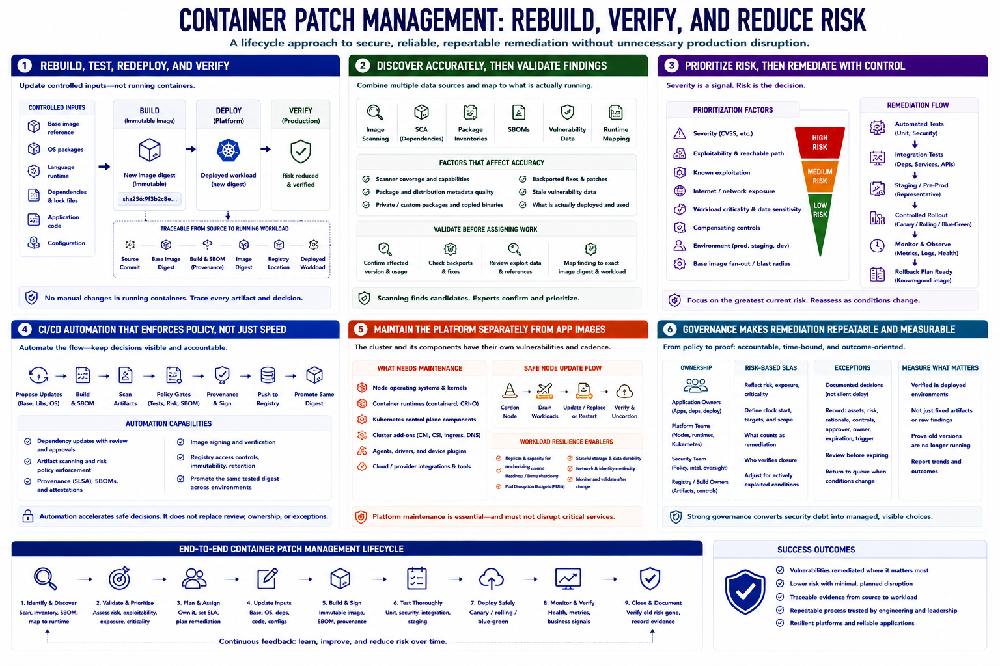

Course Summary and Key Takeaways
Connecting to LMS... Progress: in progress

Narration
Container patch management is primarily a rebuild, test, redeploy, and verify discipline. Teams update controlled inputs rather than manually editing running containers, producing immutable image digests that can be traced from source and base image to the deployed workload.
Effective discovery combines image scanning, software composition analysis, package inventories, SBOMs, current vulnerability data, and runtime mapping. Findings require validation because scanner coverage, package metadata, and actual deployment all affect accuracy.
Prioritization combines severity with exploitability, known exploitation, exposure, workload criticality, compensating controls, environment, and base-image fan-out. Remediation then moves through automated tests, integration and staging, controlled rollout, monitoring, and rollback planning.
CI/CD automation can propose updates, scan artifacts, enforce policy gates, record provenance, sign images, protect registries, and promote the same reviewed digest. Automation should accelerate decisions without removing review, ownership, or exception governance.
Nodes, runtimes, Kubernetes components, and cluster add-ons need separate maintenance from application images. Strong governance assigns owners, defines risk-based SLAs, manages expiring exceptions, and measures verified deployment rather than fixed artifacts alone. The goal is secure, reliable, repeatable remediation without unnecessary production disruption.